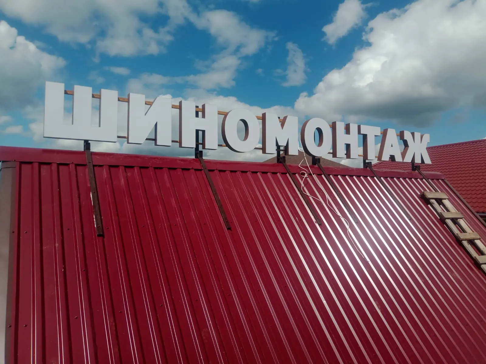
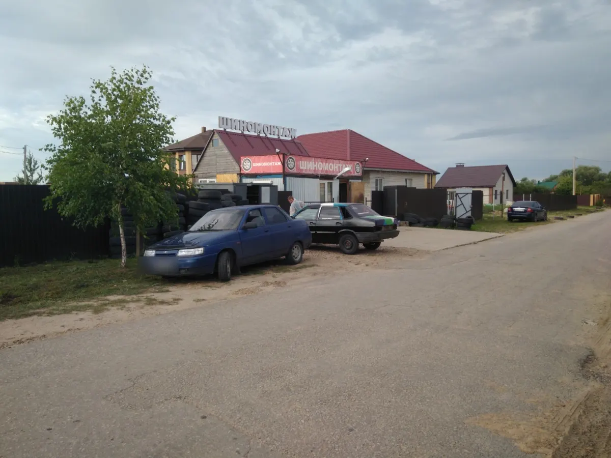
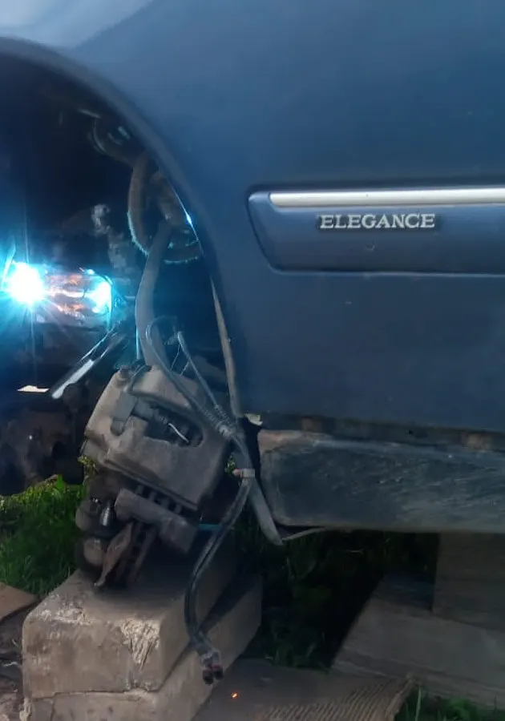
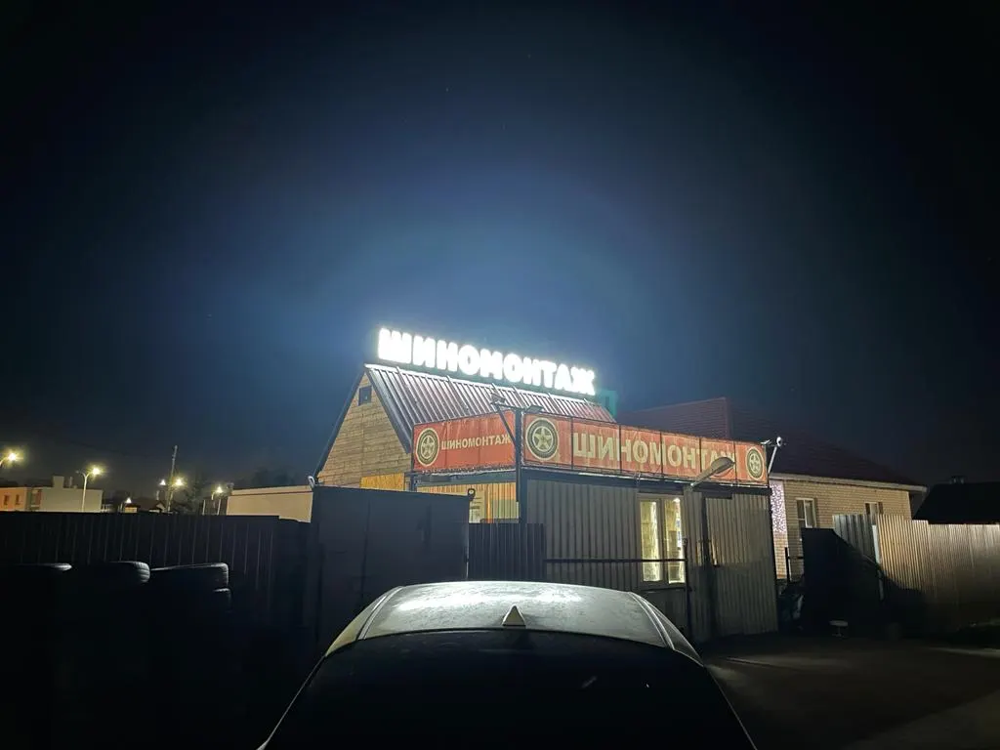

Шиномонтаж · ремонт · Верховая ул., 9А
Шиномонтаж в Калуге – и ремонт машины в одном месте
Переобувка, ремонт проколов и боковых порезов, колодки, масло, ходовая. Верховая, 9А, каждый день до 21:00.
- Каждый день с 09:00 до 21:00
- Колёса, колодки, масло, ходовая
- Верховая ул., 9А, удобный заезд

Что делают
Цены на карточке не указаны, их называют по телефону. Здесь они появятся после согласования с владельцем.
Колёса
- Переобувка и балансировкауточнить
- Ремонт проколауточнить
- Боковой порез и грыжауточнить
Машина
- Замена колодокуточнить
- Замена маслауточнить
- Ремонт ходовойуточнить
Нужного нет в списке? Позвоните и опишите, что случилось, – скажут, берутся ли и сколько это будет.
Как проходит
- 01
Звоните или заезжайте
Верховая ул., 9А, тихая улица и удобный подъезд, как пишут в отзывах. Работают каждый день с 09:00 до 21:00.
- 02
Смотрят и говорят, что можно сделать
«Проконсультировали, дали несколько вариантов решения», – пишет клиент о сломанных тормозах.
- 03
Делают
Переобувка комплекта – около 20 минут в шесть рук, ремонт прокола – около 15 минут, по отзывам клиентов.
- 04
Говорят, если заметили другое
«Если заметят какие-то проблемы, обязательно подскажут», – пишет постоянный клиент.



За что хвалят в отзывах
Быстро
«Переобули авто за 20 минут в 6 рук» – Евгений Горш, 3 ноября 2024.
Не только колёса
Клиенты меняли здесь колодки и масло, делали ходовую и радиатор.
Берутся, когда отказывают другие
«Обращалась в другие на правом берегу и в городе, и везде отказ» – Евгения Горелова, 3 ноября 2024.
Помогут и делом, и советом
«Помогут не только словами, но и делом» – Gudwin Wellikyi, 17 января 2024.
Отзывы с Яндекс.Карт
«отличный сервис клинило тормоза, приехал, ребята все оперативно посмотрели, проконсультировали, дали несколько вариантов решения, все подробно вышло недорого»
Дмитрий В. · 10 августа 2025
«Отличное обслуживание,хорошее качество работы,если заметят какие-то проблемы,обязательно подскажут.Пользуюсь услугами не только шиномонтаж ,но и менял радиатор,делал ходовую,менял щётки,ни одной претензии.»
Рустам Мусаев · 16 июня 2024
«Чётко, качественно и очень быстро! Переобули авто за 20 минут в 6 рук.»
Евгений Горш · 3 ноября 2024
Отзывы с карточки на Яндекс.Картах, без правок.
Частые вопросы
Где вы находитесь и до скольки работаете?
Калуга, Верховая ул., 9А. Каждый день с 09:00 до 21:00, по данным карточки на Яндекс Картах.
Только шины или ещё ремонт?
В отзывах пишут про шиномонтаж, ремонт проколов и боковых порезов, замену колодок и масла, ремонт ходовой. Что делают сейчас, лучше уточнить по телефону.
Сколько стоит?
Цены на карточке не указаны. Позвоните по +7 (920) 616-68-46 и опишите, что нужно: цену и время скажут по телефону.
Нужна ли запись?
В отзывах есть и «переобулся по записи», и «подождал очередь 10 минут». В сезон лучше позвонить заранее.
Можно заказать запчасти?
Клиент пишет, что запчасти для ремонта здесь заказывают сами и привозят. Условия уточняйте при звонке.
Позвоните и опишите, что случилось
- Адрес
- Верховая ул., 9А, Калуга
- Часы
- Каждый день 09:00-21:00
- Телефон
- +7 (920) 616-68-46